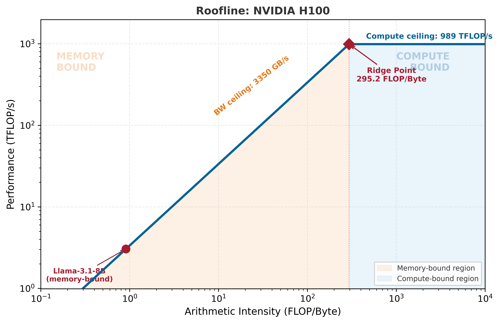

🧮 MLSys·im: First-principles ML systems modeling. Get started → 📚 Textbook: Read the ML Systems book. Explore →
The Memory Wall
Why 3.2× more FLOPS gives only 1.7× speedup — and how to know in advance.
node
beginner
Compare A100 and H100 GPUs to discover that for memory-bound workloads, bandwidth — not compute — determines performance. The most important fallacy in ML systems.
The Question
NVIDIA’s H100 has 3.2× more FLOP/s than the A100. So upgrading should give you a 3.2× speedup, right?
Wrong. For the workloads that matter most in production — LLM inference, recommendation models, any memory-bound task — you get closer to 1.7×. This tutorial shows you exactly why, and teaches you to predict the actual speedup before spending a dollar on hardware.
NotePrerequisites
Complete Tutorial 0: Hello, Roofline. You should understand memory-bound vs. compute-bound and the ridge point concept.
NoteWhat You Will Learn
Calculate the actual speedup between two GPUs for a given workload
Explain why the binding constraint determines which spec matters
Predict whether a hardware upgrade will help a specific model
Apply the roofline model to hardware procurement decisions
TipBackground: The Two Specs That Matter
GPU vendors advertise peak FLOP/s prominently. But every GPU also has a memory bandwidth spec (in TB/s) that is equally important. Which spec determines your actual performance depends entirely on which regime your workload is in:
Regime
Binding Constraint
Speedup Scales With
Memory-bound
HBM bandwidth (TB/s)
Bandwidth ratio between GPUs
Compute-bound
Peak arithmetic (FLOP/s)
FLOP/s ratio between GPUs
The key numbers for this tutorial:
Spec
A100
H100
Ratio
Peak FP16
312 TFLOP/s
989 TFLOP/s
3.2×
HBM Bandwidth
2.0 TB/s
3.35 TB/s
1.7×
If your workload is memory-bound, the speedup ceiling is 1.7×, regardless of the 3.2× compute improvement.
1. Setup
import mlsysimfrom mlsysim import Engine
2. Side-by-Side Hardware Comparison
Let’s load both GPUs from the Silicon Zoo and confirm the specs:
The FLOP/s ratio is 3.2× but the bandwidth ratio is only 1.7×. The ridge point also shifts: the H100 has a higher ridge, meaning more workloads fall into the memory-bound regime on the H100 than on the A100.
3. The Fallacy: LLM Inference Speedup
Let’s test the “3.2× speedup” claim with a workload that dominates production today — Llama-3 8B inference at batch size 1:
A100 H100 Speedup
─────────────────────────────────────────
Bottleneck Memory Memory
Latency 9.00 ms 5.60 ms 1.6x
Throughput 111.1 1/s 178.5 1/s
Both GPUs report memory-bound. The actual speedup is approximately 1.7× — matching the bandwidth ratio, not the FLOP/s ratio. The extra 1.5× compute power of the H100 is entirely wasted for this workload.
Sanity check: Llama-3 8B at FP16 = 8B params × 2 bytes = 16 GB of weights. On the A100 (2.0 TB/s), minimum decode latency ≈ 16 GB ÷ 2.0 TB/s = 8.0 ms. On the H100 (3.35 TB/s), it is 16 GB ÷ 3.35 TB/s = 4.8 ms. Speedup = 8.0 / 4.8 = 1.67× — matching the bandwidth ratio, as expected for a memory-bound workload.
4. When DOES 3.2× Matter? The Batch Size Crossover
The FLOP/s advantage only kicks in when you cross into the compute-bound regime. Let’s sweep batch size on both GPUs and find the crossover:
rows = []for batch in [1, 4, 16, 32, 64, 128, 256]: pa = Engine.solve(model=model, hardware=a100, batch_size=batch, precision="fp16") ph = Engine.solve(model=model, hardware=h100, batch_size=batch, precision="fp16") la = pa.latency.to("ms").magnitude lh = ph.latency.to("ms").magnitude sp = la / lh if lh >0else0 rows.append([batch, pa.bottleneck, ph.bottleneck, f"{sp:.1f}x"])table(["Batch", "A100 Bottleneck", "H100 Bottleneck", "Speedup"], rows)
We can visualize where Llama-3 8B sits on the H100’s Roofline model. Note the high ridge point:
from mlsysim.viz.plots import plot_roofline# Plot the H100 roofline and see where Llama-3 8B (batch 1) fallsfig, ax = plot_roofline(h100, workloads=[model])fig.show()

ImportantKey Insight
The binding constraint determines which hardware spec matters. When you are memory-bound, speedup scales with the bandwidth ratio (1.7×). When you are compute-bound, speedup scales with the FLOP/s ratio (up to 3.2×). The transition happens at different batch sizes on each GPU because the H100’s higher ridge point means it stays memory-bound longer. If you are making a procurement decision, the first question is not “how many FLOP/s?” but “which regime will my production workload operate in?”
5. The Procurement Table: Three Generations
Let’s extend the analysis across three GPU generations to see the trend:
GPU TFLOP/s BW (TB/s) Ridge Latency Bottleneck
─────────────────────────────────────────────────────
V100 125.0 0.9000 138.9 19.97 ms Memory
A100 312.0 2.04 153.0 9.00 ms Memory
H100 989.0 3.35 295.2 5.60 ms Memory
Across three generations, compute has grown faster than bandwidth. The ridge point keeps rising, which means more workloads are memory-bound on newer hardware. This is the memory wall — and it is getting worse, not better.
Your Turn
CautionExercises
Exercise 1: Predict before you compute. The B200 has ~8 TB/s HBM3e bandwidth and ~2250 TFLOP/s (FP16 dense). Before running any code, predict: write the speedup as a ratio (e.g., 2.3×) for Llama-3 8B going from H100 → B200 at batch size 1. Record your reasoning in one sentence. Then verify with mlsysim.Hardware.Cloud.B200. How close were you?
Exercise 2: Find the crossover batch size. For the A100, at what exact batch size does Llama-3 8B transition from memory-bound to compute-bound? Write a loop that sweeps batch sizes from 1 to 512 in steps of 1 and prints the first compute-bound batch size. Do the same for the H100. Why is the crossover different?
Exercise 3: Validate against published benchmarks. Look up the MLPerf Inference results for LLM workloads on A100 vs. H100 (available at mlcommons.org). Compare the measured throughput ratio to our analytical prediction from Section 3. What accounts for the difference? (Hint: real systems include software optimizations like FlashAttention and continuous batching that our first-order model does not capture. The gap between analytical prediction and measured performance is itself informative.)
Self-check: If GPU-A has 500 TFLOP/s and 2 TB/s bandwidth, and GPU-B has 1000 TFLOP/s and 4 TB/s bandwidth, what speedup do you expect for a memory-bound workload? For a compute-bound workload? (Write each answer as a ratio.)
Key Takeaways
TipSummary
The memory wall is real: HBM bandwidth has grown slower than compute across GPU generations
Speedup depends on regime: memory-bound workloads scale with bandwidth ratio, not FLOP/s ratio
The ridge point rises each generation: more production workloads are memory-bound on newer GPUs
Procurement decisions require regime analysis: always check which wall binds before comparing specs
The roofline model predicts this: Engine.solve tells you the regime before you spend a dollar